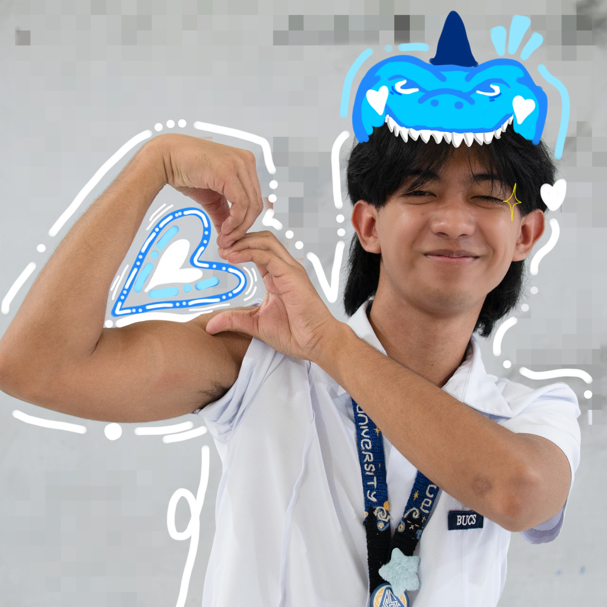

PROJECT SCREENSHOT
PROJECT SCREENSHOT
C PROGRAMMING · 2026
Hello world!
Taking my first step into this program that I've taken, I managed to create a program that greets the world hello!
HELLO THERE! ✦ WELCOME TO MY DINO NEST IN THE INTERNET
A Bachelor of Science in Computer Science 1-B student, creative enthusiast, and curious learner.
Built on curiosity. Driven by purpose. Defined by growth.

✦01 / THE PERSON BEHIND THE SCREEN
Hello! My name is Justin Rey B. Borlagdatan, but you can call me Tin for short. I am a first-year BS Computer Science student at Bicol University. A junior councilor of BU Academic Consortium of Computer Science Students (ACCeSS) auditing committee and BU Musika internal affairs committee.
I chose BS Computer Science because based on my researches, it is the best fitted program for me. I really love writing songs and stories, making arts through crafting and drawing, and playing online mobile games and fortunately, I can utilize all of my talents and aquired skills in performing jobs related to this program. Although it was by mistake thag I've placed it in my first choice rather than in the second, with thorough research and study, I might've picked the best program for me. Practicallity wise that aligns with my passion.
I'm a man of simplicity. I hate wearing too much, going out or eating in fastfood chains, or hanging out with friends in a crowded place. I usually enjoy a life drinking my green matcha tea at peace, talking intimately with friends and families, and cooking foods for them. I love making and receiving hand written letters, random crochet gifts, and art pieces.]
Currently learning: C Programming, HTML, CSS, and Independency
Personal motto: “Rejection is redirection.”
Fun fact: It may seem that I've got cold always due to that I have snot everyday. However, I have this very common condition called chronic rhinosinusitis. I have been dealing with this ever since I was in kindergarten, so I have produced excessive mucus or snot for more than a decade now.
02 / THINGS I'VE BUILT
A small collection of programs and coding exercises I've worked on.
PROJECT SCREENSHOT
C PROGRAMMING · 2026
Taking my first step into this program that I've taken, I managed to create a program that greets the world hello!
03 / WHAT I'M LEARNING
Tools, languages, and concepts I have experience with.
Basic webpage structure and fuctions.
Basic webpage design.
04 / THE CREATIVE SIDE
Different ways I enjoy creating, performing, and expressing myself.
I do commissions and make crochet flowers, headresses, tops, accessories, keychain, etc.
Of all my talents, this is the one I've been improving. After years of practice and hardwork, I've acquired skills I can proudly present to everyone.
A man passionate in his singing will eventually have that desire to write his own songs, thus I've made quite a few.
I'm more confident in poetry and creative writing than in my singing and song writing. I've won several creative wrting competitions and talent shows by performing spoken poetry.
I've been a news writer for three consecutive years winning awards in journalistic competitions. My passion for writing led me to explore different forms of literature.
As a part of the pioneer team of Tabaco City in TV Broadcasting, I've learned to broadcast my own news, acquiring another vocal skill that can be useful for future needs.
Although I can only perform very few character voices, I can say that I am a voice actor. However, I cannot imitate any famous character or person's voice.
As I've desired to possinly integrate all skills and talents that I have, I discovered that theater can be my main medium of self expression.
When I was in kindergarten, I've won 2nd place in my first drawing competition. From then on, I tried to acquire skills for this talent, however my works are not that impressive.
05 / MILESTONES
Awards, certificates, school activities, memberships, and milestones.
Tabaco National High School · Playwrighter - Tagalog
Tabaco National High School · Playwrighter - Tagalog
Tabaco National High School · Scriptwriter| Reporter | DevComm Director
Tabaco National High School · Grade Level Representative
Tabaco National High School · Actor of Oragon: Sarung Musikal
Tabaco National High School · Scriptwriter | Reporter | Videographer
Tabaco National High School
Scriptwriter | Reporter | DevComm Director | Floor Director | Videographer | Video Editor | Graphics Animator
06 / LITTLE THINGS I LOVE
07 / MY WATCHLIST CORNER
A place to keep track of what I've watched, what I'm watching, and what's next.
08 / MY REFLECTION
While I'm building my webpage, I've learned three things. First is that I still don't know myself. I thought that college would be easy since I've been praying when I was in junior high school to like jump straight in college because I know that the real deal was there. I've been chasing after this kind of thrill just because I see my academic journey as boring.
As you can see in my credentials and achievements part that I've joined competitions and participated in big events that are not even that related to each other. Due to the fact that I've been excelling in academics while participating in these extracurriculars, I've said to myself back then that college will just be a piece of cake—well I'm wrong. The Bible does really state the truth about life, and I've been greatly humbled by these sudden turn of events. College is hard and I've been looking at myself in the mirror everyday asking "Bakit ambobo ko? May mas maibobo pa ba ako?"
Second thing I've learned is that I'm not really learning. I've been struggling adjusting in college. An hour trip daily just to go to school and my sleep when I get home. I've almost passed this webpage past its deadline. I've been struggling understanding how and where to put the stuffs and things, even with the help of artificial intelligence who's doing it's best to explain things to me to the point that it's teaching as if I am an elementary student.
I've been experimenting with my css and there's this element or sticker in my webpage that are dispositioned. I mean, I've been repositioning it multiple times already, but it seems that I can't get it to the same position when in PC and mobile so I gave up. But soon, I'll get back to it and try to fix that problem. There's this part also that I've been struggling on how to position my rectangles and such. Same as I'm currently experiencing in college as a whole, I'm overwhelmed by everything. I am learning multiple things at once and comprehending such amount of information crushes every brain cells I have left.😆
I know I am responsible for all this because I've been either sleeping at class due to the reasons stated or spacing out. That brings us to my third thing I've learned. I've learned that I can. I can learn about myself and learn how to do things like making this webpage. I just have to look for the answers and ask "how?" rather than "why?". Because how can you learn if you are holding yourself back—confusing your mind on why things happen, why are you failing, why can't you keep up. Looking back at everything that I've learned about myself after making this webpage, rather than those why's, how things happen, how am I failing, how can I keep up. Asking that will lead you to your HOW AM I GOING TO IMPROVE?
09 / SAY HELLO
Have a question or want to connect? You can reach me here.